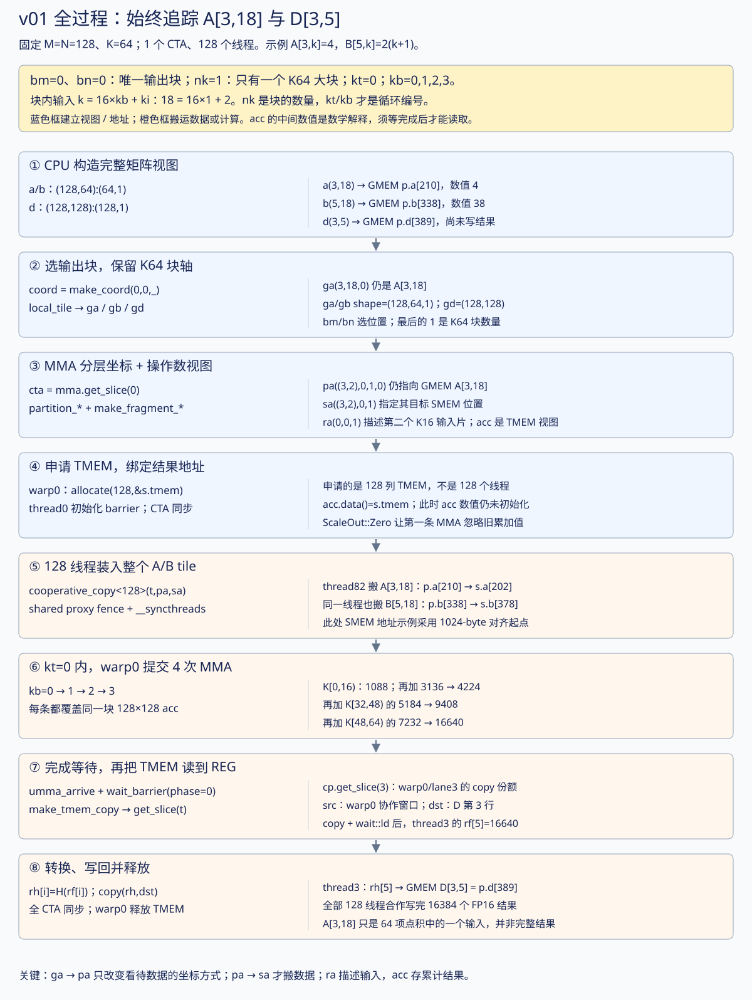
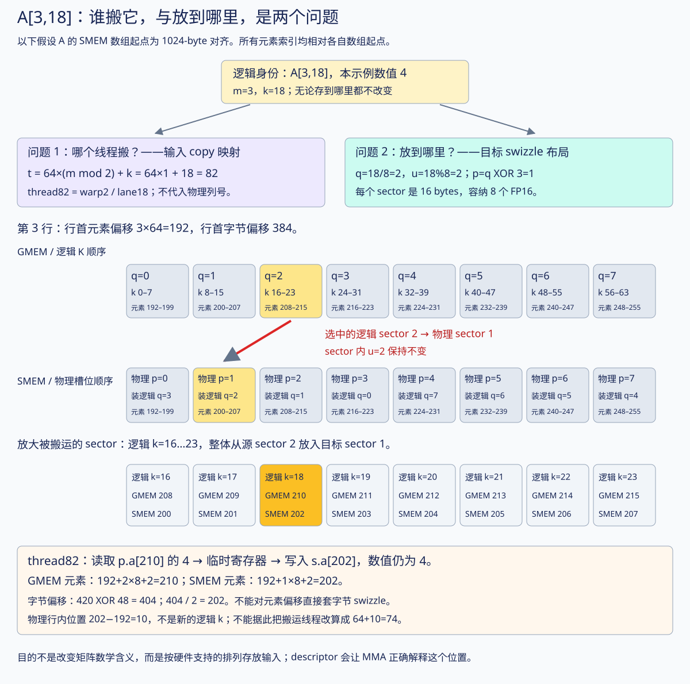

对应源码：v01_single_tile.cu。本文的行号对应当前 104 行版本。建议先读本文，再用原逐行表查单个语句。交互计算图可以选择输出坐标、推进四次 MMA，并观察 shared memory 的地址重排。
配套新增：CuTe API 与线程编排图册 · 交互选择 CTA / 线程。
这份代码难读，是因为同一个函数同时表达了数学分块、内存布局、硬件指令和异步同步。先把它们分开：数学决定要算哪些乘加，layout 决定数据放哪里，copy/gemm 才执行搬运和计算，barrier 决定何时可以使用结果。
这一节固定追踪 A[3,18] 怎样参与 D[3,5] 的计算，不切换到其他大小的 kernel。完整阶段交互可以从 CPU 启动一直推进到写回、释放；下面的静态图也能直接阅读。
为能给出具体数值，沿用本页交互示例的输入规则：A[m,k]=1+(m%4)，B[n,k]=(1+(n%4))×(k+1)。因此 A 的第 3 行全是 4，B 的第 5 行是 2,4,6,…,128。这只是教学输入，不是之前性能测试的随机数据。

| 名字 | 本版值 | 究竟表示什么？ |
|---|---|---|
| M、N、K | 128、128、64 | 完整问题的尺寸，来自 p.m/p.n/p.k |
Tile |
(128,128,64) |
本 CTA 准备的工作块尺寸 |
| 单条 MMA 的 M/N/K | 128、128、16 | 一条指令处理的乘加范围 |
bm |
0 | 输出 tile 的行编号；元素起始行为 bm×128 |
bn |
0 | 输出 tile 的列编号；元素起始列为 bn×128 |
nk |
1 | 要处理的 K64 大块数量；v01 的代码直接取常量 1 |
kt |
只取 0 | 外层循环的 K64 大块编号，满足 0<=kt<nk |
kb |
0、1、2、3 | 当前 K64 大块内，四条 K16 指令的编号 |
ki |
0…15 | 一条 K16 指令里面的 K 坐标；本文用它拆下标，源码没定义此变量 |
nk 中的 n 表示数量，不是矩阵的 N 轴。bn 则是输出 N 方向的 tile 编号。nk=1 不等于只发一条 MMA；它表示一个大块，大块内部仍有四条 MMA。
用普通循环表达真正发生的事：
bm = 0; bn = 0; // 输出块位置
nk = 1; // K64 块数量
for (kt = 0; kt < nk; ++kt) { // 本版只有 kt=0
搬入整个 A[:,0:64] 和 B[:,0:64];
等所有输入准备好;
for (kb = 0; kb < 4; ++kb) { // 四次 K16 计算
使用 k = 64*kt + 16*kb + [0:16);
更新同一个 128×128 的 acc;
}
等这批 MMA 完成;
}
把整个 acc 写回 D;
这个式子能将“整体 K 坐标”与两层循环连接起来：
k_global = 64×kt + 16×kb + ki
18 = 64×0 + 16×1 + 2
所以 A[3,18] 在 kt=0、kb=1 时参与 MMA。它并不是第 18 条指令，也不属于第 18 个 CTA。
图中的每条箭头要区分两种意义：换视图时数据没动；copy 时数值才从源存储搬到目标存储。 下表的大小均为实际 v01 的逻辑 shape；下划线整数 _128 等为便于阅读写成普通数字。
| 阶段/对象 | 逻辑 shape | 固定观察点 | 此时的含义 |
|---|---|---|---|
a |
(128,64) |
a(3,18) |
GMEM 完整矩阵视图，元素偏移 210 |
ga |
(128,64,1) |
ga(3,18,0) |
选块后还是同一 GMEM 元素；第三维是 kt |
pa |
((128,16),1,4,1) |
pa((3,2),0,1,0) |
按 MMA 分层坐标访问同一 GMEM 元素 |
sa |
((128,16),1,4) |
sa((3,2),0,1) |
目标 SMEM 视图；copy 后保存相同数值 4 |
ra |
(1,1,4) |
ra(0,0,1) |
指向第二个 K16 输入片的 descriptor，不是单个 A[3,18] 的数值 |
gd |
(128,128) |
gd(3,5) |
GMEM 的输出位置，元素偏移 389 |
pd |
((128,128),1,1) |
pd((3,5),0,0) |
上述输出的 MMA 分层视图；仍在 GMEM |
acc |
((128,128),1,1) |
acc((3,5),0,0) |
同一逻辑结果在 TMEM 中的累加位置 |
thread3 的 src |
((32,1),128,1,1) |
包含 TMEM 的 (3,5) |
warp0 的协作读取窗口，源视图可在 warp 内重合 |
thread3 的 dst |
((1,1),128,1,1) |
展平后的第 5 个位置 | GMEM 的 D[3,5]；该线程还负责同一行其他列 |
thread3 的 rf/rh |
与该 dst 相同 |
rf(5) / rh(5) |
FP32 / FP16 线程私有结果 fragment |
前几种 GMEM 视图虽然 shape 不同，计算出的相对元素偏移相同：
a(m,k) ：64*m + k
ga(m,k,kt) ：64*m + k + 64*kt
pa((m,ki),0,kb,kt) ：64*m + ki + 16*kb + 64*kt
代入观察点：
a(3,18) = ga(3,18,0) = pa((3,2),0,1,0) → 元素 210
这里公式只描述本版固定 row stride=64 的具体视图。若换成更大 K，完整矩阵的行 stride 随之变化；不能沿用这个 64 当作任意问题的 GMEM 行跨度。
SMEM 的 sa 还应用字节地址 swizzle，因而它指向另外一块存储里的元素 202。pd 则使用输出 GMEM 行 stride=128；acc 的 TLane/TCol 编码属于 TMEM 地址空间。相同 shape 不保证相同布局，更不代表同一物理存储。
ra/rb descriptor 提交 MMA。A[3,18] 的这一个乘积 4×38=152，只是第二个 K16 区间对 D[3,5] 的 16 项贡献之一。umma_arrive 关联此前 MMA，wait_barrier(...,0) 等待完成。下面的累计值是数学解释，不能把“发出了指令”当成“可以立刻读 acc”。rf(5) 转成 FP16，写到 D[3,5]。搬输入的 thread82 与写这个输出的 thread3 并非同一个线程。| kt | kb | K 区间 | D[3,5] 的本段贡献 | 累加后的数学值 |
|---|---|---|---|---|
| 0 | 0 | [0,16) | 8×(1+…+16)=1088 |
1088，第一条忽略旧 acc |
| 0 | 1 | [16,32) | 8×(17+…+32)=3136 |
4224 |
| 0 | 2 | [32,48) | 8×(33+…+48)=5184 |
9408 |
| 0 | 3 | [48,64) | 8×(49+…+64)=7232 |
16640 |
最后 D[3,5]=16640，写入 p.d[3×128+5] = p.d[389]。这一个数不代表整个 kernel 的输出：四条 MMA 同时覆盖 128×128 个逻辑结果，每个位置都有自己的完整 64 项点积。
先澄清图的读法：不是“GMEM 是逻辑、SMEM 是物理”。两种内存都有逻辑视图和实际存放位置。 原图把上排标为“GMEM / 逻辑 K 顺序”，容易造成这个误解；现已将两排分别标成“GMEM 地址顺序”和“SMEM 地址顺序”，都从左到右按各自缓冲区的地址递增排列。
逻辑坐标回答“这是矩阵的哪个元素”，布局回答“这个元素放在该缓冲区的什么位置”：
同一个逻辑元素 A[3,18]
/ \
GMEM 的 row-major SMEM 的 swizzle
/ \
p.a[210]，行内槽位 18 s.a[202]，行内槽位 10
GMEM 中本版采用 row-major，所以逻辑 k=0、1、2… 的顺序恰好与这一行的地址递增顺序一致；SMEM 中采用 swizzle，所以同样的逻辑 k 次序不再等于地址递增顺序。这个差别来自本版选择的两种 layout，不是 GMEM/SMEM 各自固有的“逻辑/物理”属性。 GMEM 也可以存重排后的数据，SMEM 也可以用普通行主序。
| 共同的逻辑身份 | 所选布局 | 对应缓冲区内的元素偏移 | 相对第 3 行行首的槽位 |
|---|---|---|---|
| A[3,18] | GMEM row-major | 210 | 18 |
| A[3,18] | SMEM swizzle（图示对齐起点） | 202 | 10 |
本文的“物理槽位”是指数据在相应内存缓冲区中的实际排列位置，用元素/字节偏移来说明；不是在推导 CUDA 全局指针经过地址翻译后的 DRAM 物理地址。copy 前后保持的是逻辑身份和数值，并不要求保持相对地址偏移。

先把 A[3,18] 看作一个带标签的数据盒：标签是 “m=3、k=18，数值为 4”。
第一层：谁负责搬这个盒子？ 当前输入 copy 的映射只需它的逻辑坐标：
t = 64×(m%2) + k
= 64×1 + 18
= 82 → warp2 / lane18
第二层：从哪里拿？ A 在 GMEM 中按行排列，一行 64 个 FP16：
行首元素偏移 = 3×64 = 192
元素偏移 = 192+18 = 210
字节偏移 = 210×2 = 420 → 读取 p.a[210]
第三层：放到哪里？ 目标 SMEM 用 SW128 排列。以下示意假设 SMEM 数组基地址为 1024-byte 对齐；每个 sector 为 16 bytes，装 8 个 FP16：
逻辑 sector q = 18/8 = 2
sector 内 u = 18%8 = 2
本行 swizzle = m%8 = 3
物理 sector p = q XOR 3 = 2 XOR 3 = 1
目标元素偏移 = 3×64 + p×8 + u
= 192 + 1×8 + 2
= 202 → 写入 s.a[202]
在第 3 行，完整排列是：
逻辑 sector q： 0 1 2 3 4 5 6 7
该 q 对应物理 p： 3 2 1 0 7 6 5 4
按 SMEM 物理槽位看：
物理槽位 p： 0 1 2 3 4 5 6 7
里面装的逻辑 sector： 3 2 1 0 7 6 5 4
↑
物理槽位 1 装逻辑 sector 2
这行 XOR 恰好是自身的逆映射，因此上面两种方向写出的数字顺序相同，但两行分别在回答“给定逻辑 q 去哪里”和“给定物理 p 装什么”，别把问题混起来。
逻辑 sector 2 内原本装 k=16…23，它在 SMEM 的物理 sector 1 内仍保持内部次序：
逻辑 k： 16 17 18 19 20 21 22 23
GMEM 元素偏移： 208 209 210 211 212 213 214 215
SMEM 元素偏移： 200 201 202 203 204 205 206 207
↑
同一个 A[3,18]，数值 4
也可以在字节单位下验算：
420 = 0x1A4
行相关 XOR 掩码 = 3×16 = 48 = 0x030
0x1A4 XOR 0x030 = 0x194 = 404 bytes
404 / sizeof(FP16) = 404/2 = 202 个元素
这里的 420/404 是对应排列中的字节偏移，210/202 是元素偏移，不是完整指针。真实 GMEM 和 SMEM 属于不同存储空间，基地址也不同；不能把两个偏移之差解释为从某个真实指针“移动了 16 字节”。
最容易犯的错误是：看到 202-192=10，就认为逻辑 k 变成了 10，再算线程 64+10=74。10 只是它在物理行内所占的元素槽位；逻辑标签仍是 k=18，因此搬运者仍是 thread82。 它没有变成 A[3,10]。
thread82 知道源、目标两份 view，因此能从 p.a[210] 拿到数值，再按目标 view 写到 s.a[202]。MMA 随后使用与 sa 布局一致的 descriptor，把这个槽位解释为 A[3,18]。源行主序、目标 swizzle、MMA descriptor 三者在逻辑坐标上对应起来。
若换成无 swizzle 的普通目标 row-major 布局，目标位置会是元素 210；但更换 layout 也可能让 cooperative_copy 的分工启发式重新选映射，不能断言任意换布局后 thread82 都不变。本文要区分的是当前这一套 copy 映射中的逻辑所有权与当前目标 layout 中的物理地址。
1024-byte 对齐只是让这个相对地址示意不用携带额外的基地址位；实际硬件 swizzle 作用于字节地址。源码 alignas(128) 不等于对任意地址保证 1024-byte 对齐。其他起点应将相关基地址位一起纳入运算。
本版只接受 M=128、N=128、K=64：
A：128 行 × 64 列，FP16，按行连续存放
B：128 行 × 64 列，FP16，按行连续存放
D：128 行 × 128 列，FP16，按行连续存放
D[m,n] = sum(k=0..63) A[m,k] × B[n,k]
注意是 D = A × Bᵀ。源码中的 B 以 (N,K) 存储。因此取 A 的第 m 行与 B 的第 n 行做点积，得到 D 的第 m 行、第 n 列。没有另外启动一个转置 kernel；“Bᵀ”表达数学关系。
先缩成容易手算的 2×4 和 3×4：
A = [ 1 2 | 3 4 ] B = [ 1 0 | 1 0 ]
[ 5 6 | 7 8 ] [ 0 1 | 0 1 ]
[ 1 1 | 1 1 ]
D = A × Bᵀ = [ 4 6 10 ]
[ 12 14 26 ]
例如 D[1,2] = 5×1 + 6×1 + 7×1 + 8×1 = 26。
竖线把 K 分两段。第一段算出的也是一个完整的 2×3 输出形状，只是数值尚未累加完整：
K=0..1 的贡献 K=2..3 的贡献 相加
[ 1 2 3 ] [ 3 4 7 ] [ 4 6 10 ]
[ 5 6 11 ] + [ 7 8 15 ] = [ 12 14 26 ]
真实 kernel 原理相同：把 K=64 分成四段，每段 16。四次 MMA 一直更新同一个 128×128 的结果块，并非每次算结果的四分之一行。 小矩阵仅解释数学，硬件指令仍使用真实的 128×128×16 形状。
下面是执行顺序示意，不能直接编译。issue_mma 表示异步 Tensor Core 操作，不是由某线程执行三重标量循环。
// 一个 CTA：128 个线程 = 4 个 warp。
// SMEM：A、B 各一块；TMEM：一个 FP32 累加矩阵。
申请 128 列 TMEM;
初始化 MMA 完成通知对象;
全 CTA 同步;
128 个线程合作：A 从 GMEM 搬到 swizzled SMEM;
128 个线程合作：B 从 GMEM 搬到 swizzled SMEM;
让这些 SMEM 写入对异步 MMA 可见;
全 CTA 同步，确保 A、B 已经全部准备好;
warp0 发出：
acc = A[:, 0:16] × B[:, 0:16]ᵀ; // 忽略 TMEM 旧值
acc += A[:, 16:32] × B[:, 16:32]ᵀ;
acc += A[:, 32:48] × B[:, 32:48]ᵀ;
acc += A[:, 48:64] × B[:, 48:64]ᵀ;
把上述 MMA 的完成通知关联到 mma_bar;
所有线程等待 MMA 完成;
每个线程：把自己负责的结果从 TMEM 读进 FP32 寄存器;
每个线程：等待自己的 TMEM load 完成;
每个线程：转成 FP16，再写到 GMEM 的正确输出坐标;
全 CTA 同步;
释放 TMEM;
这就是本版全部算法。它没有 TMA、双缓冲、跨 CTA 合作，也没有 K 方向的多个 64 元素大块。
CuTe Tensor 可以理解为“访问数据的句柄”：存储引擎/指针 + layout。大部分 make_tensor 只是创建视图；使用 make_tensor<float>(shape) 这种拥有数据的形式，才会创建这里的线程私有临时存储。
| 名字 | 这里具体是什么 | 创建它时搬矩阵数据吗？ |
|---|---|---|
a / b / d |
完整 GMEM 矩阵的指针和行主序布局 | 不搬 |
ga / gb / gd |
当前 CTA 选中的 GMEM 子块视图 | 不搬 |
pa / pb / pd |
按 MMA 需要的坐标层次组织的 GMEM 视图 | 不搬 |
s.a / s.b |
实际的 shared memory 数组 | 预留空间，还没装入 A/B |
sa / sb |
同一批 shared memory 配上 swizzled layout | 不搬 |
ra / rb |
给 MMA 使用的 SMEM descriptor fragment | 创建描述信息；不把 A/B 元素搬进寄存器 |
acc |
TMEM 累加器视图 | 创建视图时尚未完成 TMEM 分配 |
s.tmem |
一个保存 TMEM 基地址的 32-bit 字段 | 它不是累加矩阵本身 |
src / dst |
某个线程负责的 TMEM 源、GMEM 目标视图 | 不搬 |
rf / rh |
该线程的 FP32 / FP16 临时 fragment | 用于接收实际数据，目标是寄存器存储 |
命名中的 r 容易误导：ra/rb 内部存的是描述符值；rf/rh 内部才是矩阵数值。寄存器里存一张“地址说明”与寄存器里装一组 FP16 数，是两件事。

第 84–85 行：
auto a = make_tensor(make_gmem_ptr(p.a),
make_layout(make_shape(p.m, p.k),
make_stride(p.k, _1{})));
代入本版参数：
指针：p.a
shape：(128,64)
stride：(64,1)，单位是元素
a(m,k) 的元素偏移 = m×64 + k
A[3,18] 的元素偏移 = 3×64+18 = 210
FP16 占 2 字节，所以相对于 p.a 的字节偏移 = 420
make_gmem_ptr 给指针附上“位于 global memory”的类型信息，帮助 CuTe 选择适用操作。它不执行 cudaMalloc，也不读取 A。真正的输入分配和填充在 runner_graph.cuh。
B 的 shape/stride 也是 (128,64):(64,1)。D 是 (128,128):(128,1)，因此 D[3,5] 位于第 3×128+5=389 个 FP16 元素。
| 写法 | 读法 | 本版例子 |
|---|---|---|
using T = ... |
给一种类型取短名字 | Mma 是类型名 |
decltype(expr) |
取得表达式结果的类型；这里不执行表达式 | 推导 CuTe 很长的布局类型 |
auto x = expr |
让编译器推导变量类型 | 避免手写 Tensor 的模板参数 |
_128、_1 |
CuTe 编译期整数类型 | 编译器知道数值，可推导布局、展开循环 |
_1{} |
构造一个值为 1 的编译期整数对象 | stride 的连续轴 |
Mma{}、LA{} |
构造这种类型的对象 | 不等于分配 Tensor Core 或矩阵 |
_ |
切片中的“保留这一维”标记 | pa(_,_,_,0) 只固定最后一维 |
X |
投影中省略这一轴 | A 不使用 N 轴 |
_、_1 和 X 是三种用途不同的写法。
第 27、48、97 行保留了代码生成模板的常量表达式。阅读 v01 时直接化简成：
int bm = 0, bn = 0; // 1 >= 3 为 false
int nk = 1; // 1 == 1 为 true
fn<<<dim3(1,1), 128, sizeof(BasicStorage)>>>(a,b,d);
一个 CTA，128 个线程，4 个 warp。第三个 launch 参数是动态 shared memory 字节数。整个 CTA 共用一份 BasicStorage，不是每个线程各一份。
cudaFuncSetAttribute 是 CPU 端配置；configured 避免重复配置；basic<decltype(a), ...> 选定对应 Tensor 类型的 kernel 实例；末尾的 launch 是测试程序调用的统一入口。VERSION=1 告诉测试程序检查本版的输入约束。
SM100_MMA_F16BF16_SS<H,H,float,128,128,
UMMA::Major::K,UMMA::Major::K>
逐个读：输入 A 是 H=half_t，输入 B 也是 H；累加数值是 float；一次指令输出的 M、N 分别为 128、128；A、B 都采用 K-major 的 shared-memory 描述方式；SS 表示两个操作数的矩阵数据来自 shared memory。
这里没有写出 16，是因为该 FP16 原语的 CuTe traits 使用 K = 256 bits / 16 bits = 16。所以一条指令的乘加规模为 (128,128,16)。
make_tiled_mma 把这个原语包装成 CuTe 的分块操作对象，让它提供 partition_A/B/C、make_fragment_A/B/C 等配套映射。本版没有额外把很多 atom 拼成更大的 M/N 输出。
Tile = Shape<_128,_128,_64> 则表达这次 kernel 准备的工作块 (M,N,K)=(128,128,64)。所以两个 K 同时存在：大块 K=64，指令 K=16。Tile 和 Mma 是不同层次。
原来的 A 坐标只有 (m,k)。为了调用 K=16 的 MMA，把 k 拆开：
k_inner = k % 16 // 这一条 MMA 内的 K 坐标
kb = k / 16 // 第几条 MMA，0、1、2、3
(m,k) → ((m,k_inner), m_repeat, kb)
本版 m_repeat 恒为 0，因为只有一块 M=128。
shape → ((128,16),1,4)
元素数 → 128×16×1×4 = 8192 = 128×64
((128,16),1,4) 有 3 个顶层维度，第 0 维里面又包含两个子维度。不要把它看成 (128,16,1,4) 然后用相同的 size<i> 解释。
例如 A[3,18] 对应 ((3,2),0,1)：第 1 个 K16 块，块内第 2 个 K 元素。这里暂时只是换一种坐标描述，数值仍然是同一个 A 元素。
using LA = decltype(UMMA::tile_to_mma_shape(
UMMA::Layout_K_SW128_Atom<H>{}, ShapeA{}));
Layout_K_SW128_Atom<H> 提供硬件支持的一种基本 SMEM 排列。这里的 layout atom 是可以重复铺开的基本排列单元；它与上面的 MMA atom（一次基础计算操作） 用途不同。共同点只是“拿一个基本单元构造大对象”。
tile_to_mma_shape 将该排列适配到 ShapeA=((128,16),1,4)。sa 用它确定每个逻辑元素的实际 SMEM 位置，ra 的 descriptor 也从它生成。因此写入和 Tensor Core 读取遵守同一份地址约定。
本版 A/B 每行有 64×2=128 字节。先把数组基地址视为 1024-byte 对齐（例如 SMEM 地址 0），可以用下面的等价相对地址公式观察本版 swizzle；单位最后换回字节：
sector = k / 8 // 每个 16-byte sector 装 8 个 FP16
within = k % 8
physical_sector = sector XOR (m % 8)
shared_element_offset = m×64 + physical_sector×8 + within
shared_byte_offset = 2 × shared_element_offset
硬件 swizzle 作用于字节地址。若实际基地址不是 1024-byte 对齐，还要把基地址的相关位纳入计算，不能只代入相对行号。本版结构体的 alignas(128) 本身不等于对任意基地址保证 1024-byte 对齐；图与诊断明确采用 1024-byte 对齐的起点来展示排列。
每行 8 个 sector，每个 sector 内的 8 个 FP16 保持原次序，只改变 sector 在这一行的摆放次序。这里说的是本版 128-byte 行跨度的具体公式，不能直接套到别的行跨度或所有 CuTe layout。
例如同一个逻辑元素 A[3,18]：
GMEM 元素偏移：3×64+18 = 210
sector=2，within=2，2 XOR 3 = 1
SMEM 元素偏移：3×64+1×8+2 = 202
读取 p.a[210] 的值 → 写到 s.a[202]
Tensor Core 根据相同 swizzle 描述，把 s.a[202] 解释为 A[3,18]
换的是存放地址，数学上没有把 A[3,18] 改成 A[3,10]。 sa 的逻辑坐标到物理地址映射会处理这件事。也不要把“使用 SW128”理解为任意访问模式都不会 bank conflict。
ArrayEngine<H,cosize_v<LA>> 是实际空间。size 数逻辑元素个数，cosize 求布局需要的地址容量，存在空洞时可能不同。本版二者都是 8192：A 16 KiB，B 16 KiB；加上 barrier、TMEM 地址字段和结构体对齐，sizeof(BasicStorage) 还会略大于 32 KiB。本版没有输出 SMEM buffer。
extern __shared__ char buf[];
auto &s = *reinterpret_cast<BasicStorage *>(buf);
把 launch 时给出的 shared memory 区域视作 BasicStorage。s.a、s.b、s.mma_bar、s.tmem 因而有各自的偏移。alignas 要求相应字段按指定字节边界对齐。
每个线程都会执行这两行，但它们得到的 s 指向同一个 CTA 的 shared memory。相反，int bm、Mma mma、后面的 rf 等是各线程自己的变量。
所有矩阵乘法共用 (M,N,K) 三个数学轴，但 A 只用 (M,K)，B 只用 (N,K)，D 只用 (M,N)：
| 视图 | 投影参数 | 保留轴 | 忽略轴 |
|---|---|---|---|
ga |
Step<_1,X,_1> |
M、K | N |
gb |
Step<X,_1,_1> |
N、K | M |
gd |
Step<_1,_1,X> |
M、N | K |
这里 _1 参与表达投影，并非声称矩阵每一维的物理 stride 都是 1。
coord=(bm,bn,_)=(0,0,_) 固定输出块位置，保留 K 块轴。于是：
ga 的 shape：(128,64,1)
↑ 最后这一维：总共有几个 K64 大块
gb 的 shape：(128,64,1)
gd 的 shape：(128,128)
最后的 1 不要省掉：CuTe 仍保留这个维度，以便后续版本处理多个 K64 大块。
auto cta = mma.get_slice(_0{});
auto pa = cta.partition_A(ga), pb = cta.partition_B(gb);
auto pd = cta.partition_C(gd);
此处的 slice 取的是本 MMA 的 CTA 份额。本版只有一个 CTA 参与，编号就是 0。这里不是“给 thread 0 分数据”。 不能凭 get_slice 这个名字就认定它的参数一定是线程号；要看所属对象。
本版 pa：
shape = ((128,16),1,4,1)
内部块 │ │ └─ kt：第几个 K64 大块，只有 0
│ └── kb：大块内第几个 K16 小块，0..3
└──── M 方向重复次数，本版为 1
pa(_,_,_,0)：固定 kt=0，保留前三个顶层维度
得到 ((128,16),1,4)，能与 sa 对应
pa 仍然指向 GMEM。partition_A 不会提前加载它；cooperative_copy 才会加载。
auto sa = make_tensor(make_smem_ptr(s.a.begin()), LA{});
auto sb = make_tensor(make_smem_ptr(s.b.begin()), LA{});
auto ra = cta.make_fragment_A(sa), rb = cta.make_fragment_B(sb);
auto acc = cta.make_fragment_C(pd);
sa/sb 是 SMEM 的访问方式。ra/rb 把这种访问方式转成该 MMA 接受的描述符：告诉硬件从哪块 shared memory 开始、采用什么布局，以及本次 K16 切片在哪里。
描述符像“存储地址及格式说明”，自身不包含 8192 个 FP16 元素。因而虽然 ra 的名字含 r，也不表示这里已经做了 ldmatrix。本版没有用 ldmatrix，Tensor Core 直接消费 SMEM 中的 A/B。
诊断中 ra 的逻辑 shape 为 (1,1,4)：每个 K16 切片只需要一个 descriptor 位置，第三维仍有四个切片。它不再像 sa 那样把 128×16 个输入数值展开为第一个 mode；描述符会指向那一整片数据。这也解释了 ra(_,_,kb) 为什么能选中一次 MMA 的完整 A 操作数。
acc 给出结果的 TMEM 布局，但此时还缺少真正申请到的 TMEM 基地址。可以类比“已经知道二维数组的形状和访问规则，还没绑定底层存储地址”。
本版 TMEM 累加器占 128 条 lane × 128 列，每个单元是一个 FP32：
128 × 128 × 4 bytes = 65536 bytes = 64 KiB
TMEM 是独立于 shared memory 的硬件存储。SMEM 里的 s.tmem 只有 4 字节，用来存基地址；不能把它当作一块 64 KiB 的 SMEM 数组。
if (warp0) alloc.allocate(...) 要求 warp0 全部 32 个线程参与这项协作操作。threadIdx.x==0 则只让一个线程初始化 mma_bar。后面的 __syncthreads() 保证其他线程再读取初始化后的信息。
acc.data() = s.tmem 是绑定 TMEM 地址，不是把结果矩阵赋值为某个整数。
cooperative_copy<128>(threadIdx.x, pa(_,_,_,0), sa);
cooperative_copy<128>(threadIdx.x, pb(_,_,_,0), sb);
模板参数 128 是合作线程数，不能读成“每次搬 128 字节”。CUTLASS v4.6.0 的这个重载默认 MaxVecBits=16（一个 FP16），即本版使用 cooperative_copy<128,16>。更大的向量化宽度需要显式选择，并满足对齐等条件。
整个 CTA 对 A 搬 8192 个 FP16，对 B 再搬 8192 个 FP16。均匀分工的工作量是每线程每矩阵 64 个 FP16，但具体哪些元素归哪个线程由 CuTe 的 copy 算法和布局决定；不能因此断言“thread t 一定搬第 t 行”。后文的输出分工也不能直接套到这里。
补充实际验证：本版 thread t 搬 A/B[2*r+t/64, t%64]，r=0..63。例如 thread82 搬奇数行的第 18 个 K 元素；输出时它却写 D 的第 82 行。详细 owner 图见API 图册。
搬运路径为普通 GMEM load → 线程暂存 → SMEM store。源视图使用行主序地址，目标视图使用上面的 swizzle 地址。例如从 GMEM 元素 210 读取 A[3,18]，存到 SMEM 元素 202；B 也遵守自己的相同规则。
Tensor Core 的异步访问与普通线程的 shared stores 不只涉及线程先后关系，还涉及不同访问代理间的可见性。
| 语句 | 这里保证什么 | 不能拿它替代什么 |
|---|---|---|
fence_view_async_shared() |
让普通 SMEM stores 对异步访问方满足所需可见性/顺序 | 不负责集合全部 128 个线程 |
__syncthreads() |
等 CTA 中所有线程到达；到下一步时所有人的搬运已结束 | 不单独表达这项跨代理 fence，也不等待未来发出的 MMA |
可以分成两个问题：我的写入能否被 Tensor Core 正确观察到？所有人的写入是否都已完成？ 两个问题都解决，才能提交计算。
mma.accumulate_=Zero 在第一条指令之前设置。Zero 的效果是忽略 TMEM 旧累加值；它不代表把 A 或 B 乘零，也不要求先运行一个清零循环。
kt 和 kb 要分开读：
| 变量 | 本版取值 | 含义 |
|---|---|---|
kt |
只有 0 | 第几个 K64 大块，外层循环只跑一次 |
kb |
0、1、2、3 | 这 64 个 K 元素内部的四个 K16 指令切片 |
ra(_,_,kb) 选定描述符的第 kb 个 K16 切片。源码 size<2>(ra) 取第 2 个顶层维度，实际为 4。
| kb | A/B 采用的 K 区间 | 本次模式 | 同一个 acc 更新后的意义 |
|---|---|---|---|
| 0 | [0,16) | Zero | 前 16 项之和 |
| 1 | [16,32) | One | 前 32 项之和 |
| 2 | [32,48) | One | 前 48 项之和 |
| 3 | [48,64) | One | 全部 64 项之和 |
例如构造 A[3,k]=1、B[5,k]=k+1，只追踪 D[3,5]：
MMA 0：1+2+...+16 = 136 acc[3,5] = 136
MMA 1：17+...+32 = 392 acc[3,5] = 528
MMA 2：33+...+48 = 648 acc[3,5] = 1176
MMA 3：49+...+64 = 904 acc[3,5] = 2080
同时，其他 16383 个输出位置也各自完成对应的点积段。一个 MMA 不是只算这一个 D[3,5]，示例只是把它放大观察。
CUTE_UNROLL 请求编译器展开小循环，不表示四条指令同时完成。gemm 在这里提交 Tensor Core 操作；它不是 cuBLAS 调用，也没有在这个位置重新启动一个 kernel。
warp0 的 32 个线程都进入这段代码，但 CUTLASS 的此原语内部通过 elect_one_sync() 选出一个线程执行底层 tcgen05.mma 发射。因此每个 kb 是一条 MMA，不是 32 条重复计算。同样，不能直接把整个 warp0 分支随意改成仅 thread0 调用，因为其中不同 API 有各自的参与约定。
异步提交只代表硬件收到工作，不代表工作已经结束。umma_arrive(&s.mma_bar) 将此前 MMA 的完成与这个 barrier 关联；随后所有线程在 wait_barrier(s.mma_bar,0) 等待。
初始化中的 count=1 是本轮所需的完成通知计数，不是等待线程数。四条 MMA 后面跟一组完成通知，足以等待此前关联工作结束；不需要因为有 128 个等待线程就把它设成 128。
kt&1 是循环复用 barrier 的 phase。本版 kt=0，只等 phase 0 的这一轮。暂时无需把后续流水线的多阶段 phase 协议塞进这个版本。
这一段就是 epilogue：计算之后的处理和写回。本版只做 FP32→FP16 转换与 GMEM store，没有 bias 或激活。
auto cp = make_tmem_copy(SM100_TMEM_LOAD_32dp32b1x{}, acc);
auto th = cp.get_slice(threadIdx.x);
auto src = th.partition_S(acc);
auto dst = th.partition_D(pd);
cp 是“这类 TMEM 读取操作如何覆盖 acc”的 copy 配置；th 才是当前 CUDA 线程的份额。这里的 get_slice(threadIdx.x) 与前面的 mma.get_slice(_0{}) 所属对象不同，含义也不同。
32dp32b1x 的一次 warp 协作操作读取 32 条 datapath，每条给出一个 32-bit 数。warp 的每个线程拿到一个 FP32；要覆盖整个输出，CuTe 还要按布局重复调用这个基础操作。名称中的 1x 不代表整个 copy(cp,src,rf) 只读一次就结束。
在当前 kernel 和这个 copy atom 下，实际 CuTe 映射为 thread t 负责 D 的第 t 行，共 128 个结果。这不是从线程数猜出来的：布局诊断穷举核对了全部 16384 个输出坐标。
| 线程 | warp / lane | 最终负责的逻辑结果 |
|---|---|---|
| 0 | warp0 / lane0 | D[0,0:128] |
| 1 | warp0 / lane1 | D[1,0:128] |
| 31 | warp0 / lane31 | D[31,0:128] |
| 32 | warp1 / lane0 | D[32,0:128] |
| 64 | warp2 / lane0 | D[64,0:128] |
| 127 | warp3 / lane31 | D[127,0:128] |
例如 D[3,5] 由 thread3 读出并写回。thread3 的第 5 个逻辑寄存器元素承接它；它还要处理 D 的第 3 行其他 127 列。
TMEM 的 acc 布局打印为 ((128,128),1,1):((65536,1),0,0)。其中 65536 是 TMEM 编码里 lane 轴的步长（高位编码），不是 GMEM 中“一行占 65536 个 float”。本版逻辑 (m,n) 对应相对 TLane=m、TCol=n；实际访问还要加已申请的 TMEM 基地址。
每个 warp 的一次基础 load 取本 warp 对应的 32 行、某一列；CuTe 重复覆盖 128 列。因此计算任务由 warp0 提交，读取结果时则四个 warp 各负责 32 行，不能把写回的行归属误当成每个 warp 独立执行了一份矩阵计算。
auto rf = make_tensor<float>(shape(dst));
auto rh = make_tensor<H>(shape(dst));
copy(cp, src, rf); // 真正 TMEM → REG
cutlass::arch::fence_view_async_tmem_load(); // 等读取完成
for (int i=0; i<size(rh); ++i)
rh(i) = H(rf(i)); // FP32 → FP16
copy(rh, dst); // 真正 REG → GMEM
注意本版 partition_S 表示 warp 协作读取窗口：同一 warp 的线程可以持有重合的源视图，具体收到的寄存器数值再由 copy atom 映射到各 lane；src 的逻辑元素数不是每线程寄存器数。完整形状见API 图册第 8 节。
src 和 dst 以同一份 copy 映射分片，保证从 TMEM 拿到的逻辑 (m,n) 写回正确的 D[m,n]。它们的物理地址空间和 stride 可以不同。
make_tensor<float>(shape(dst)) 在源码层面创建线程私有 fragment，CuTe 目标存储为寄存器；实际寄存器分配与是否溢出仍由编译结果决定，不能仅凭 make_tensor 就断言任何规模都不会 spill。
fence_view_async_tmem_load() 在此发出 tcgen05.wait::ld，等待本线程的 TMEM 读取完成，才能使用 rf。它与前面的等待 MMA 完成是两种不同的等待：一个等“算完”，一个等“把算好的结果读进寄存器”。
最后 __syncthreads() 让 warp0 确认其他线程已经完成这段读取/写回流程，再释放 TMEM。release_allocation_lock() 归还分配许可，free(s.tmem,128) 才释放申请的 128 列；不应把释放提前到其他 warp 仍会访问 TMEM 的位置。
partition_A 会不会把 A 搬到 shared memory？ 不会。它改变访问视图；cooperative_copy 才执行搬运。ra 是不是 Ampere ldmatrix 得到的 FP16 fragment？ 不是。本版是 SS 原语，ra 保存 SMEM descriptor；矩阵数据仍在 SMEM。allocate(128) 和 launch 的 128 是不是同一个意思？ 不是。前者是 TMEM 列数，后者是 CTA 线程数。建议第一次阅读按 第 1 节数学 → 第 2 节执行顺序 → 第 3 节变量 → 第 8 节累加 → 第 9 节写回 → 第 4–7 节布局构造 的顺序。这样再遇到长模板表达式，就知道它在为哪一步服务。
本讲义直接核对本机 CUTLASS v4.6.0 的原语、traits 和当前 kernel；另外编译运行了一个只在 CPU 上打印 CuTe 布局的临时诊断程序，确认 shape、swizzle 地址和输出线程映射。原始输出保留在 v01-layout-inspection.txt。这项诊断不启动 GPU，不构成新的性能测试。交互动画表示数学和数据路径，不是 GPU 周期级仿真。
固定观察 A[3,18] 与 D[3,5]：A[3,k]=4、B[5,k]=2(k+1)，最终 D[3,5]=16640；与下方交互矩阵采用相同输入规则。bm=bn=0、nk=1、kt=0 固定不变。
中途显示的累计值只解释数学贡献：提交异步 MMA 后不能立即读取 acc，必须等完成 barrier。图不模拟 GPU 时钟或各 warp 的精确交错。
示例输入固定为 A[m,k]=1+(m mod 4)，B[n,k]=(1+(n mod 4))×(k+1)。默认 m=n=0，四次结果正好是 136、528、1176、2080。图画出真实维度，放大点积用数学值展示；不模拟 GPU 时间或 FP16 舍入。
使用上面的 m 作为 A 行号，选择 k。下图的格子是 16-byte sector，每格含 8 个 FP16。上排按逻辑 K 次序排列，下排按 SMEM 物理位置排列；示意固定使用 1024-byte 对齐的数组基地址。
例如把 m 改成 3、k 改成 18：逻辑 sector 2 移到物理 sector 1；GMEM 元素 210 被复制到 SMEM 元素 202。